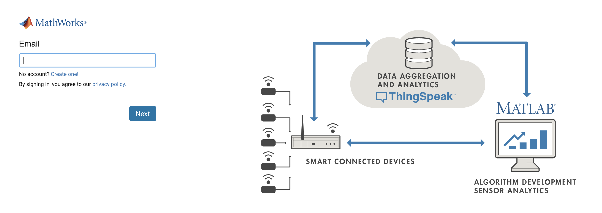
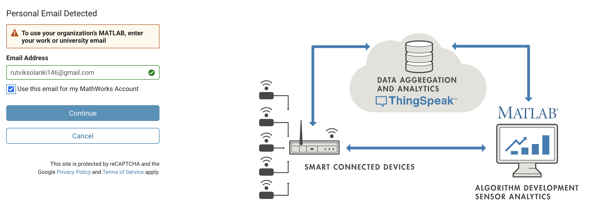
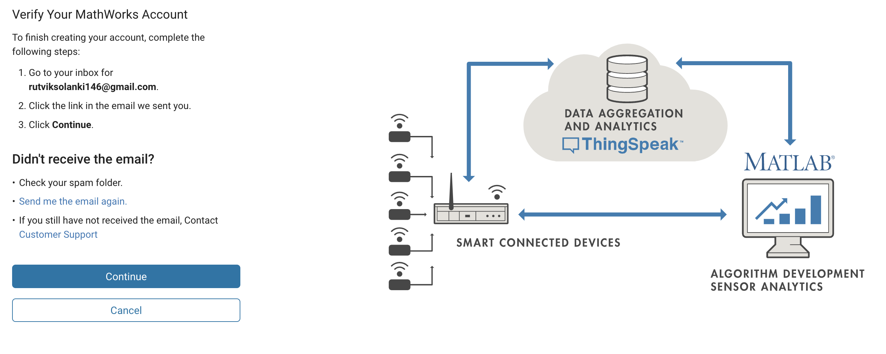

Creating a ThingSpeak Account
Referencing the content in this workshop:
Bulusu, Kartik V. (2024, October 12). Connect, Compute and Communicate! Practical introduction to a DIY internet of things system. [Workshop for the IEEE Northern Virigina Section and IEEE Computer Society]. Department of Mechanical and Aerospace Engineering, The George Washington University.
Steps to Create Your ThingSpeak Account
ThingSpeak is a platform for the Internet of Things (IoT) that allows you to collect, analyze, and visualize data from sensors. Follow these steps to create your account:
1. Access the MathWorks Sign-In Page
Navigate to the MathWorks sign-in page. You’ll see a form similar to this:

2. Create a New Account
If you don’t have an account, click on “Create one!” to start the account creation process.

Fill in your details, including your email address, location, and name.
3. Use Your Work or University Email
For accessing your organization’s MATLAB license, it’s recommended to use your work or university email.

If you entered a personal email, you may see a warning. You can choose to continue with your personal email or switch to a work/university email.
4. Verify Your Email
After submitting your information, you’ll need to verify your email address.

Check your inbox for the verification email and follow the link provided.
5. Complete Your Profile
The final step is to set up your password and accept the terms of service.

Create a strong password and make sure to check the box to accept the Online Services Agreement.
6. Access ThingSpeak
Once your MathWorks account is set up, you can use these credentials to log into ThingSpeak and start your IoT projects!
Remember, ThingSpeak offers powerful tools for data aggregation and analytics, allowing you to connect smart devices and develop algorithms for sensor analytics using MATLAB.